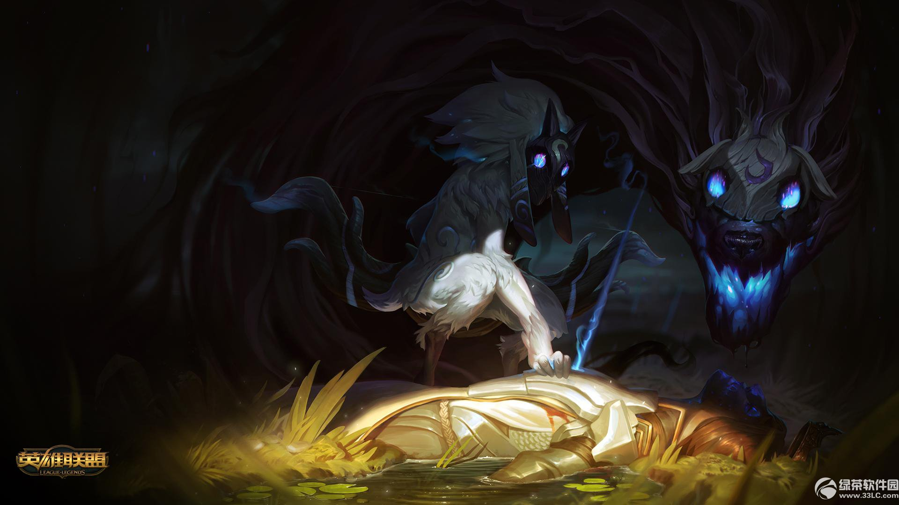

永猎双子 千珏

完美的死亡
玛嘉已经是第14次面对死亡了，她又一次像烂苹果一样衰弱下去，腐烂的阴影笼罩着她。这位女演员一边走向死亡，一边向世界发出她最后的呐喊。
“哦，生命是怎样的一个梦啊！只有现在——但是太晚了！——我清醒地看到生命的无限辉煌。”她抱怨道。
伴随着一阵烟雾和闪闪发光的粉末，千珏在舞台上打开一座巨大的入口。按照传统，他们由同一位演员来扮演，他的头上戴着两种截然相反的面具。他接近了玛嘉，白色的羊灵面具对着她。
“听！那是一个对我最仁慈的箭矢的恳求吗？来吧，孩子，让你心中的温暖沉入湮没的冰冷怀抱吧。”
就像之前的13次一样，玛嘉又一次拒绝了。她表演中的细微差别都被穿透耳膜的尖叫所掩盖。恰在此时，羊灵旋转了方向，露出第二个面具：狼灵。
“任何企图逃避死亡的想法都是痴人说梦。”狼灵咆哮着。
“我只是个可怜的年轻女孩儿！请用你们的四只耳朵仔细听听我卑微的哭喊吧。”
观众似乎对欧菲勒姆剧团这部尚未完结的剧目极其热衷，在保护国所宣扬的瘟疫与战争的双重威胁下，死亡剧目风靡一时。
丹吉，扮演羊灵和狼灵的演员，扑到年轻女演员的身上，恶狠狠地露出了木制的尖牙。玛嘉露出了她的脖子，在狼灵的血盆大口面前，她悄悄打开了缝在衣领上的机关。红色面料的丝带掉了出来，就像殷红的血一般，观众欢呼着。他们觉得已经值回了票价。
演员们回到马车上，向着尖针溪的方向进发。天上看不到任何星星，相反，大片的云遮住了夜空。
尖针溪总有一批好观众，剧团的老板，也是唯一的编剧伊卢森又一次解释道。他蹒跚地走来走去，他喝了太多自带的烈酒，还有帕尔从当地人手里骗来的葡萄酒。
夜幕降临了，剧团陷入了争吵。崔娅和丹吉对他的情节表示不满，认为这样就陷入了俗套：少女遇到悲剧，死亡找到了少女，死亡带走了少女。伊卢森则反对，认为太过复杂的剧情会干扰完美的死亡场景。
玛嘉其实是同意崔娅和丹吉的看法的，但作为剧团最年轻的成员，她并没有发表自己的意见。如果不是跟着剧团流浪，她的命运肯定会更加悲惨。对她而言还算幸运的是，因为伊卢森坚持独断专行的艺术创作，剧团最近走了好几个演员。因为他的态度——以及显而易见的平庸——他们正面临缺乏新鲜血液的尴尬局面。也因此，欧菲勒姆剧团同意让玛嘉一直担任剧目中的死亡角色，她对此一直心存感激。
在示意他们的车夫帕尔停下来扎营的时候，伊卢森仍旧对丹吉和崔娅之前的话心存芥蒂。喝醉了的编剧将他的铺盖铺在马车旁边最舒服的位置，又把其他人的被褥扔进附近的长草丛。
“忘恩负义的家伙只能睡在野地里，”伊卢森啐道，“也许在那里他们可以学会什么是礼貌。”
其余的人生起了一堆篝火，交换着各自的故事。丹吉和崔娅相拥而眠，互相在耳边念叨尚未出世的孩子的名字。他们悄悄谈起旅行剧团停留在詹岱尔的那天，那个小镇完美而宁静，非常适合结束流浪生活来养育自己的孩子。
玛嘉向篝火靠近了一些，火焰燃烧的噼啪声遮住了那对伴侣令人厌烦的恩爱低语。
但她睡不着，她翻来覆去，脑海里盘旋的都是当代表着鲜血的红丝带从她的领口展开时观众脸上的表情。美貌少女被自己的天真带入死亡是伊卢森吸引观众的手段，但所有人都喜欢看这种场景。
终于，她从自己的床铺上起身，来到树林中平复自己不安的心情。
在死一般沉寂的夜里，玛嘉来到一片长草的低地，一些石板竖立在地上。尽管看不清石头上铭刻的文字，但她用手指摸出了自己熟悉的千珏的双子面具。这是死者的地盘，一片已经存在很久的墓地。
她感觉到脖子上一阵寒意，她被强迫着抬起头。这里不只有她一个人。玛嘉立刻意识到自己看到了什么，每天晚上她都会演出这样的剧目。但可怜的丹吉并不能用恐惧占据玛嘉的心房。在她的面前，坐在一个已经风化的墓碑上的，是羊灵，而站在她旁边的则是羊灵永远忠实的另一半，狼灵。
“我听到了心脏的跳动！”狼灵说道，他的黑眼睛闪烁着欢乐的光芒。“我可以吃掉它吗？”
“大概可以，”羊灵回答。“我感觉到她很害怕。说话吧，漂亮人儿，你叫什么名字？”
“我，我要先听你们的名字。”玛嘉一边后退，一边结结巴巴地说。她缓慢的逃脱被狼灵所发觉，他迅速地接近了她的身后。
他直接在她耳边说：“我们有很多名字。”
“在西方，我是伊娜而他是阿尼，”羊灵说。“在东方，人们叫我法尔雅而叫他沃利尔。但无论在哪里我们都是千珏。我是狼灵的羊灵，而他一直是羊灵的狼灵。”
狼灵变大了，在空气中嗅了嗅。
“她的游戏太无聊了，”狼灵说，“我们来玩个新的吧，追赶、逃跑和撕咬。”
“她并没有在玩，亲爱的狼灵。”羊灵说，“她很害怕，忘记了她自己的名字。它就在她的嘴边，不敢出来。别担心，亲爱的孩子，我已经知道你的名字了。我们知道它，正如你了解我们一样，玛嘉。”
“请，请别，”玛嘉颤抖着，“今晚天气多好啊——”
狼灵吐出了他粉色的舌头，继续喋喋不休。
“所有的夜晚都适合进食。”狼灵大笑着。
“每一个白天也一样。”羊灵说。“光明能让射击更加精准。”
“今晚没有月亮！”玛嘉哭叫道。她挥舞着手臂，就像伊卢森教过她的，这样营地的人就可能看到她的动作。“它藏在云层的后面，我和你们都看不见！没有月亮的话，我最后能看到的还有什么？”
“我们能看到月亮。”羊灵回答，抚摸着她虚化的弓。“它一直在那里。”
“今天也没有星星！”玛嘉又一次努力道，但这一次动作变小了，声音也没有那么大了。“没有钻石一般闪烁在夜幕，还有什么美丽的景色可以满足一个遇上了羊灵和狼灵的人吗？”
“这个叫玛嘉的家伙在玩一个新游戏，”狼灵咆哮，“叫作‘拖延’。”
狼灵停下脚步，昂起了头。他把鼻子转向玛嘉，说道：“现在我们可以玩‘追逐玛嘉，撕咬她’的游戏了吗？”狼灵把牙咬得铿铿响。
“让我们问问她吧。”羊灵说。“玛嘉！你想要狼灵的追逐，还是我的箭矢？”
玛嘉现在抖得越发厉害。她四下打量，想要看尽这个世界的最后一眼。这里并不是一个特别坏的终结之地。这里有草，有树，还有古老的拱门，气氛很宁静。
“我更想要羊灵的箭矢。”她看着树木粗糙的外壳，说道。“我会想象自己爬到最高的树枝上，就像孩提时代那样。只有这一次，我不会停止攀爬。与你们一同离去是这样的吗？”
“不，”羊灵说，“尽管是个好想法，但我恐怕不是这样，小姑娘。我们在寻找自己的乐趣，今晚是你来到我们面前，而不是我们来找你。”
“我不能追逐玛嘉了。”狼灵的声音中有一丝失望。“但附近还有其他东西，其他可以追逐撕咬的东西。快点，羊灵，我饿了。”
“现在，你的表演令我们很满意，我们将一直看着，直到我们再次相遇的那一天。”
狼灵绕过玛嘉，消失在树林里。阴影般的巨兽像蛇一般蜿蜒行走在遍地长草的田野中。玛嘉转头向后看去，风化的墓碑上也不见了羊灵的踪影。
女演员逃走了。
当玛嘉回到营地的时候，营地已经成为一片废墟。她才刚刚开始称为家的马车被洗劫一空，烧得只剩下外壳，服装和道具散落一地。
她看见丹吉的尸体离他之前睡觉的地方不远，他死的时候还想保护崔娅，后者的尸体躺在他的后面。从地上的血迹来看，他们死得并不干错利落。他们努力想靠近对方一些，在死前，他们的手指终于碰在一起。
玛嘉注意到伊卢森在与帕尔一起被烧焦在马车上之前还设法杀死了两个强盗。
唯一完好无损的东西，是丹吉的羊灵与狼灵的面具。玛嘉把它们捡起来，将羊灵的面具套在头上，然后听到了狼灵的声音。
“追逐那个玛嘉。”
女孩拼命向尖针溪跑去，再也没有回头看一眼。
金色圆形剧场中满是期待的目光，都在对着天鹅绒窗帘闪闪发光。国王偕同王后和他们的顾问坐在剧院中，热切期待着戏剧的开始。每个人都关注着黑色的幕布，等待着演员的出场。
玛嘉坐在台下一个安静的化妆室里。当她审视自己在镜中的模样时，她听到人群静了下来。青春的光泽早在几年前就从她的眼中褪色，只给她留下了斑白的发丝。
“夫人！”舞台工作人员说道，“你还没有换好服装。”
“的确没有，孩子，”玛嘉说，“我会在最后一刻穿好的。”
“现在已经是最后一刻了，”年轻的工作人员说，他的手中拿着玛嘉的两件道具：玛嘉当年从欧菲勒姆剧团带来的羊灵和狼灵面具。
“希望您今晚的演出顺利。”工作人员说。
玛嘉准备上台了。她把面具戴在头上。一股从古墓带来的熟悉的寒意顺着她的背脊涌了上来。她并不抗拒这样——一直以来都是这样。
一上台她就抓住了所有观众的心，她优美的动作就好像羊灵一样。她用狼灵顽皮的野蛮激动着人们。作为死亡双子的化身，她化解演员同伴们的痛苦，或是撕扯他们的喉咙，直到人群站起身来，爆发出雷鸣般的掌声。
这是真的。所有的观众都爱完美的死亡，而他们最喜欢的还是玛嘉。
甚至连国王和王后都站起来赞誉玛嘉的表演。
但是玛嘉没有听到掌声，也没有看到热烈的欢迎。她感觉不到脚下的舞台，也感觉不到其他演员向她伸出的手臂。她只能感觉到胸口一阵剧烈的疼痛。
当玛嘉环绕四周时，她看到观众们的每一张脸，不是羊灵就是狼灵。